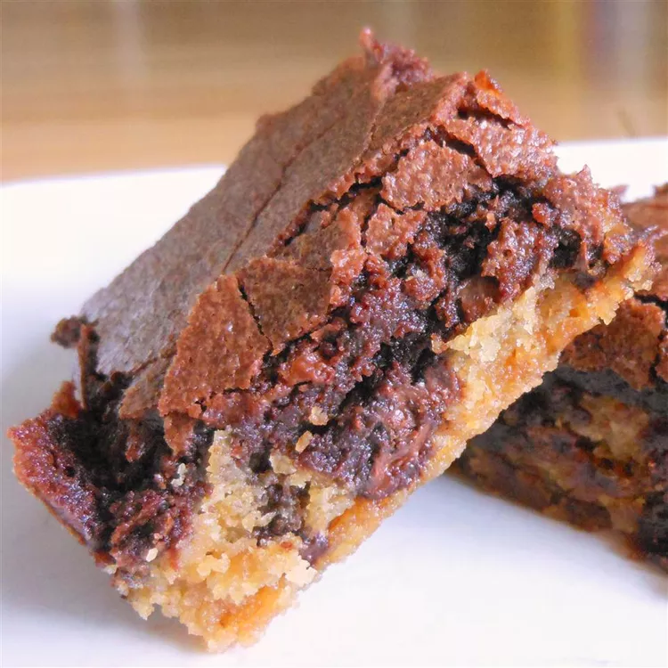

Brookies (Brownie Cookies)

This brookie recipe was inspired by a co-worker who couldn't decide if she wanted brownies or chocolate chip cookies for her birthday treat. Since she said I should just pick one, I thought this up on the way home. I couldn't find a recipe like it on Allrecipes, so I created it. These brookies go quickly; I usually make a double batch in a jelly roll pan. -Recipe by Melanie B
Ingredients
Cookie Layer:
- 1/2 cup butter, softened
- 1/2 cup light brown sugar
- 1/4 cup white sugar
- 1/2 teaspoon vanilla extract
- 1 large egg
- 1 1/4 cups all-purpose flour
- 1/2 teaspoon salt
- 1/2 teaspoon baking soda
- 1 cup semisweet chocolate chips
Brownie Layer:
- 1 cup white sugar
- 1/2 cup butter, melted
- 1 teaspoon vanilla extract
- 2 eggs
- 1/3 cup cocoa powder
- 1/2 cup all-purpose flour
- 1/4 teaspoon baking powder
- 1/8 teaspoon salt